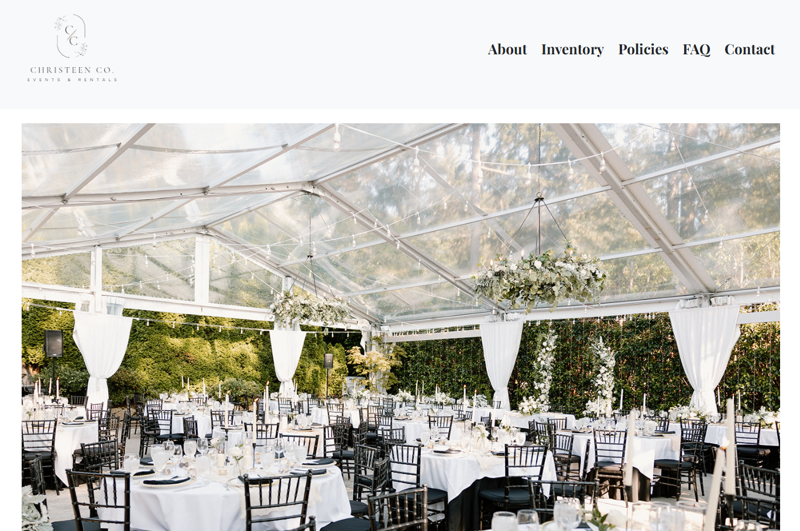
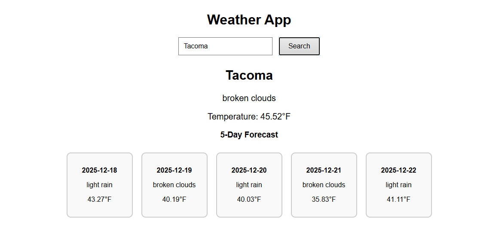
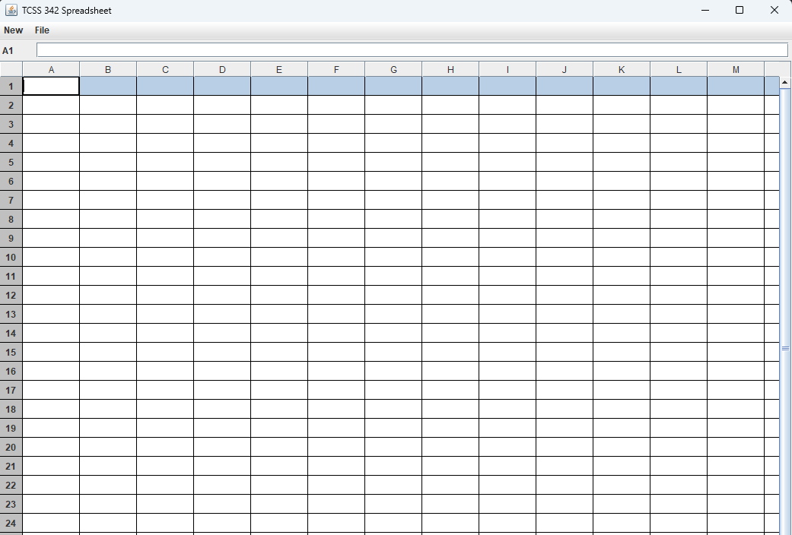

Languages
Java
Python
JavaScript
SQL
HTML
CSS
Computer Science and Systems | UW Tacoma
I am Anthony Co, an aspiring software developer focused on web applications, API integrations, Java/Python projects, and thoughtful tools that make complex tasks easier to use.
About
I am a junior at the University of Washington Tacoma pursuing Computer Science and Systems. My work centers on breaking problems into clear pieces, designing maintainable code, and learning quickly through hands-on projects.
Recent projects include a live business website, a weather application with a FastAPI backend, a Python game-stats tracker, a full-stack event marketplace MVP, a Java dungeon RPG, and a Java spreadsheet engine with GUI features. Across those builds, I have practiced collaborating with clients and teammates, integrating APIs, managing project scope, and polishing user-facing details.
Skills
Projects
Engineered a playable dungeon RPG combat system with multi-attack logic, cooldowns, block mechanics, bleed effects, class abilities, 3 hero classes, and 20+ database-loaded monsters.
Refactored duplicate attack logic into an extensible hook-based architecture and collaborated through YouTrack across 50+ tracked Agile work items.
Developed a full-stack event marketplace MVP in 24 hours with authentication, event discovery, performer listings, booking workflows, REST APIs, and Supabase-backed persistence.
Worked in a 4-person rapid iteration loop to ship 10+ core features and resolve integration issues under strict hackathon constraints.

Designed and deployed a responsive business website for a party rental company, improving online presence and making client booking details easier to access.
Built a command-line tool that retrieves and displays global player statistics using the Mozambique API, with modular handling for API responses and limitations.

Created a weather tracker with real-time current conditions and a 5-day forecast, combining a FastAPI backend with a clean browser interface and user-friendly error handling.

Implemented spreadsheet logic for formula parsing, expression evaluation, dependency tracking, editable Swing grid cells, and custom save/load behavior.
Experience
Education
Completed transfer coursework before continuing into the Computer Science and Systems program at UW Tacoma.
Education
Studying computer science and systems with a focus on software engineering, data structures, backend development, and practical team-based projects.
Software Engineering Intern
Designed a responsive short-term rental listing interface with browsing, filtering, and booking flows, improving mobile usability and helping pages load 30% faster.
Systems Project
Engineered a turn-based RPG combat system with class-specific abilities, cooldowns, status effects, scalable monster data, and an extensible combat architecture.
Recent Build
Helped ship a full-stack event marketplace MVP in 24 hours with auth, event discovery, performer listings, booking flows, REST APIs, and persistent storage.
Contact
I am always glad to connect with recruiters, engineers, and collaborators. The fastest ways to reach me are email and LinkedIn.
Open Current Resume